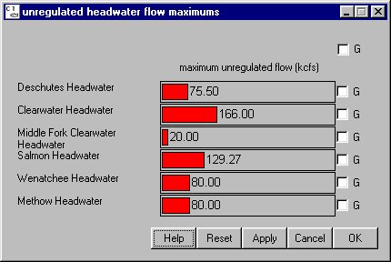

Unregulated Max
Selecting Flow HeadwaterUnregulated Max opens a window for allocating flows to unregulated headwaters, that is streams with a confluence downstream of a dam. This is a 100-year flow used to determine how flow is distributed among unregulated headwaters in the Monte Carlo Mode, when flows at the dams are specified. It is not used as a limit and will be automatically reset to the maximum flow placed, if greater than the initial value assigned. Default values are determined by relative cross-sectional areas of the streams.
HeadwaterUnregulated Max opens a window for allocating flows to unregulated headwaters, that is streams with a confluence downstream of a dam. This is a 100-year flow used to determine how flow is distributed among unregulated headwaters in the Monte Carlo Mode, when flows at the dams are specified. It is not used as a limit and will be automatically reset to the maximum flow placed, if greater than the initial value assigned. Default values are determined by relative cross-sectional areas of the streams.
This is a Slider Input window.

Headwater Unregulated Flow Maximum window